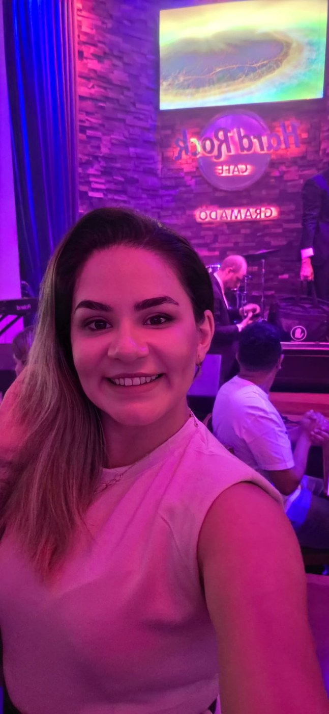
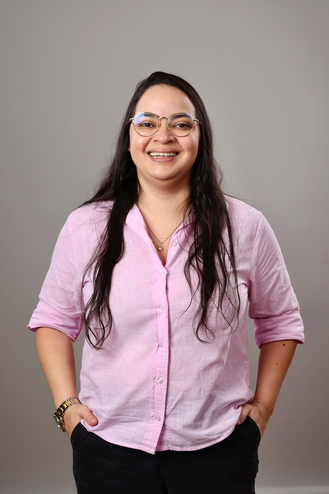

Diane Vinha Arantes
RM 575041 · Turma 1TDSPS
QUEM FAZ O MOVASI
Projeto acadêmico da turma 1TDSPS — FIAP, Global Solution 2026/2.

RM 575041 · Turma 1TDSPS

RM 575040 · Turma 1TDSPS
RM 574951 · Turma 1TDSPS
Conheça a proposta da equipe para ampliar o acesso à informação sobre mobilidade.
Sobre o MovaSI